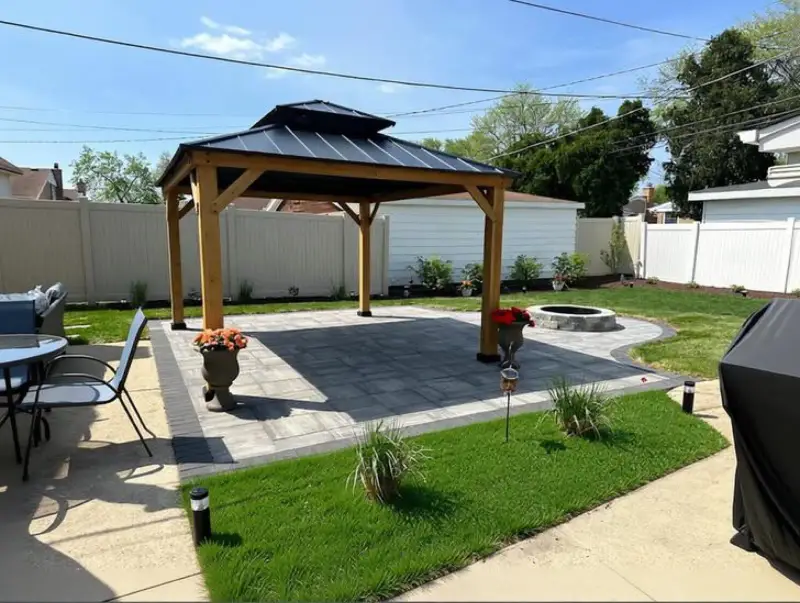
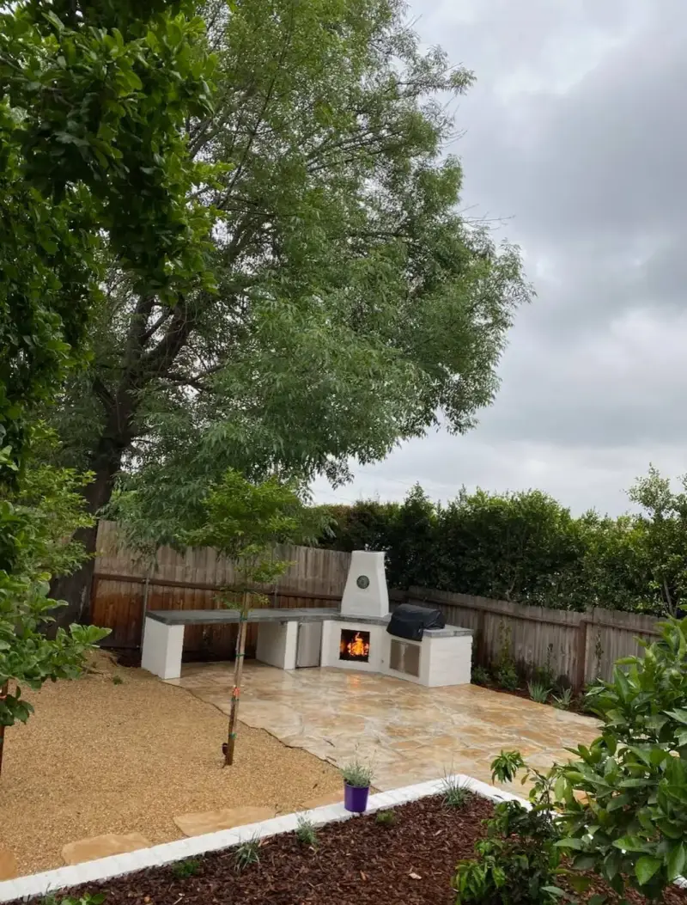
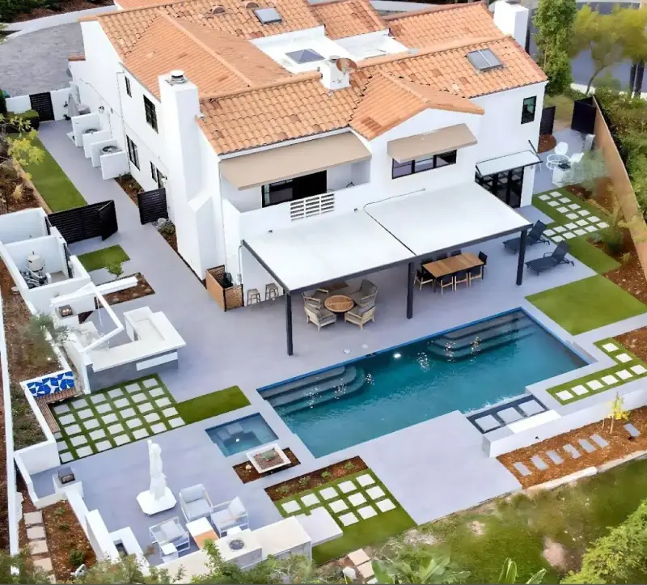

Full-scope landscape construction, hardscape installation, demolition and outdoor builds for residential and commercial properties across the Bay Area.

We handle full-scope landscape construction from site prep and grading through finished install. Our in-house crew manages every stage so there are no gaps between design, demo, build and finish work.
Whether it's a full backyard rebuild or a new construction site, we coordinate permitting, grading, utilities, hardscape and structural work in a single tight schedule.
Upgrade your outdoor area with hardscape installation built to last. Pavers, natural stone, board-formed concrete, outdoor kitchens, fire features, walkways and pool decks.
We fabricate most hardscape elements on-site with our own crew. For specialty work — large stone, complex metalwork — we lean on a short bench of fabricators we've worked with for years.

Clear the way for your new build with professional demolition and site-clearing services. Old concrete, failing retaining walls, pools, decks, overgrown vegetation — we remove and haul it off cleanly.
Every demo includes proper disposal, recycling where possible, and full site cleanup so the next phase can start on clean ground.
Pergolas, pavilions, outdoor kitchens, fire pits, pizza ovens and custom shade structures — built in-house by our carpentry and masonry crew.
Every structure is engineered for California conditions (seismic, fire, weather) and permitted where required. We build to last decades, not seasons.

Tell us what you're building. We'll walk the site and send back an honest quote within a week.